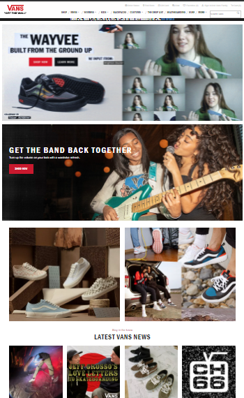
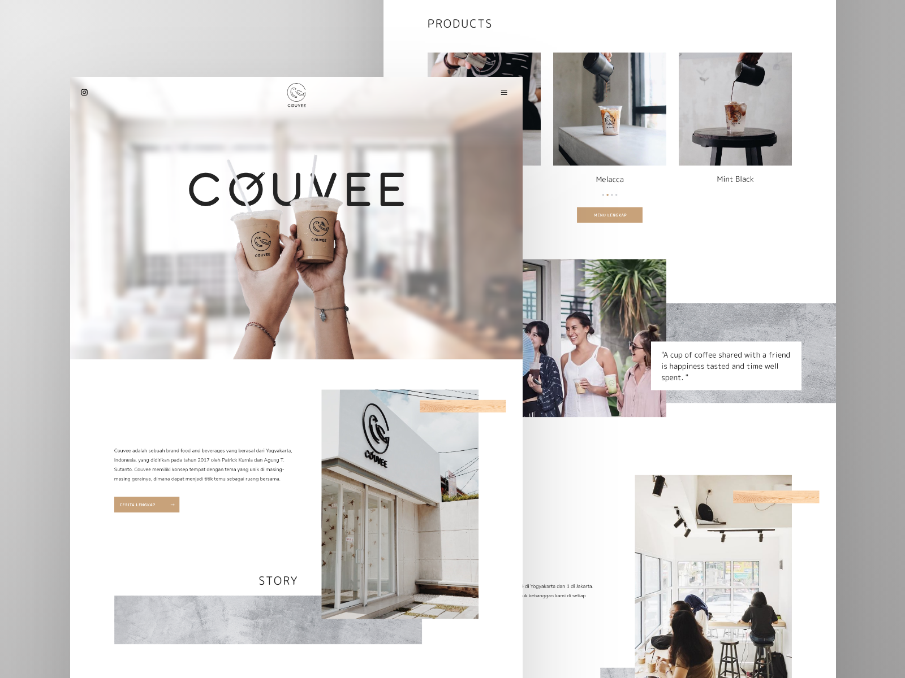
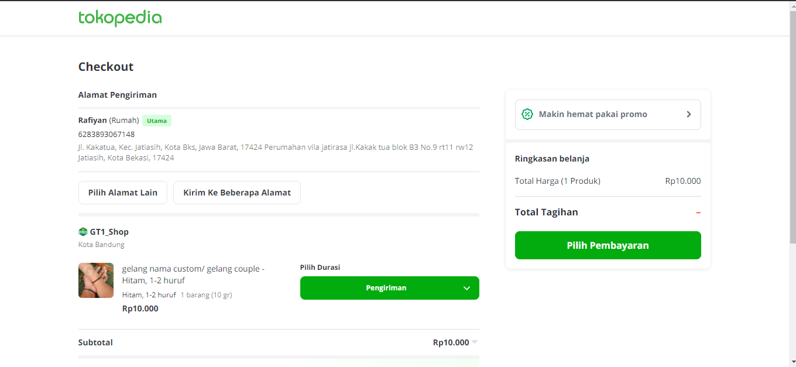
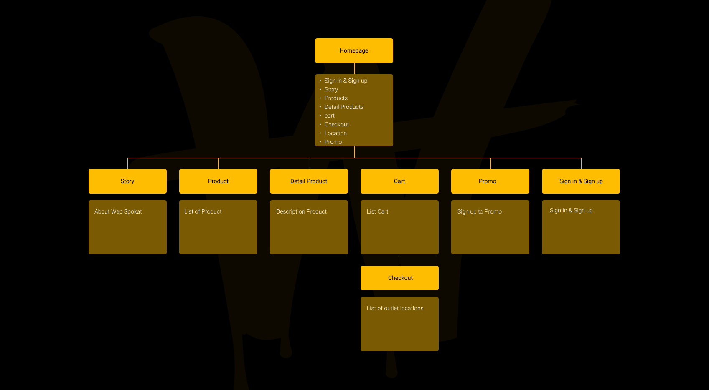
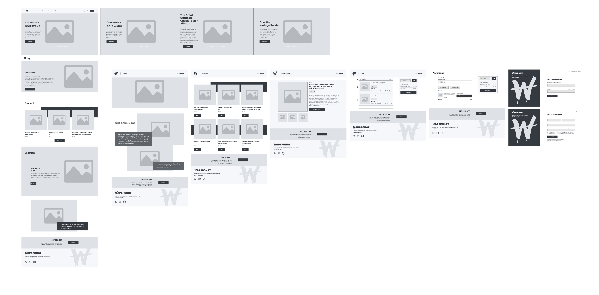
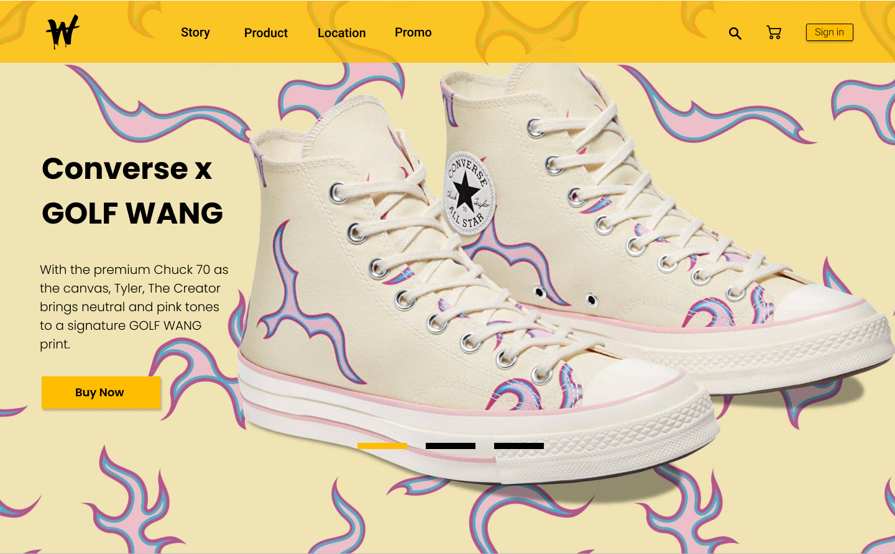
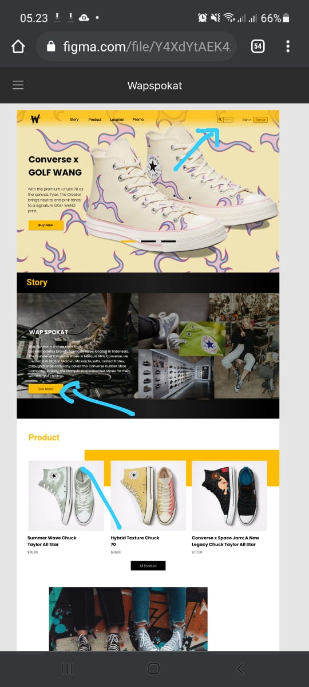
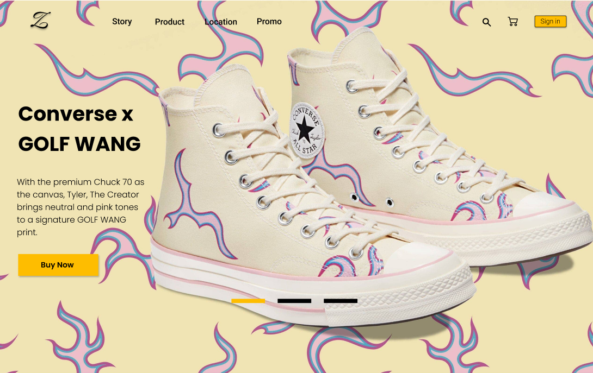

Goal achieved
Membuat belanja menjadi mudah.
 Afif RizkyantoUI/UX DESIGNER
Afif RizkyantoUI/UX DESIGNER
Ini adalah tujuan yang ingin dicapai pemilik dengan situs web baru.
Pengguna memerlukan akses untuk berjualan secara online, dan pengguna ingin menjadi lebih profesional dalam berjualan.
Target audiensnya adalah orang-orang yang belum mengetahui tentang Wap Spokat. Wap Spokat dapat ditemukan di situs web dan pelanggan dapat berbelanja secara online.
Saya mengumpulkan kebutuhan dari klien, membuat wireframe, membuka revisi, dan mempresentasikan hasilnya kepada pemangku kepentingan dalam rapat.
Ini adalah situs pertama Wap Spokat, jadi saya membuat situs dari nol. Mulai dari tampilan dan kesan (look and feel), elemen-elemen desain, hingga desain setiap halamannya. Berikut adalah halaman-halamannya:
Ini adalah situs pertama Wap Spokat, jadi saya membuat situs dari nol. Mulai dari tampilan dan kesan (look and feel), elemen-elemen desain, hingga desain setiap halamannya. Berikut adalah halaman-halamannya:
Saya sedang mencari inspirasi dan referensi dari beberapa situs web.



Menurut saya, lebih baik memiliki peta situs (sitemap) agar saya dan para pemangku kepentingan memiliki sudut pandang yang sama terhadap proyek, meskipun itu adalah situs yang kecil.

Langkah selanjutnya adalah membuat kerangka (wireframe) untuk halaman tersebut. Saya meminta konten asli dari klien untuk dimasukkan ke dalam wireframe ini agar saya tahu cara menatanya dan akhirnya menambahkan beberapa dekorasi desain.

Setelah saya mendapatkan elemen desain dan warna dari panduan merek (guidelines), saya langsung beralih ke desain mockup. Dan inilah desain awal dari halaman beranda.

Menawarkan revisi awal untuk halaman beranda, agar Anda dapat melanjutkan ke seluruh halaman.


Setelah rapat terakhir, di mana saya melakukan revisi di tempat bersama klien, desainnya telah selesai sepenuhnya. Kemudian masuk ke tahap pengembangan hosting, dan situs tersebut sudah aktif.
Membuat belanja menjadi mudah.
Informasi dan pengetahuan lebih lanjut tentang toko online.
Memahami konsep alas kaki.
Masalah teratasi.
Memenuhi kebutuhan pengguna & tujuan audiens.